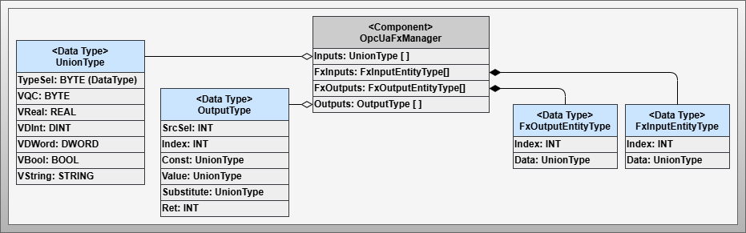
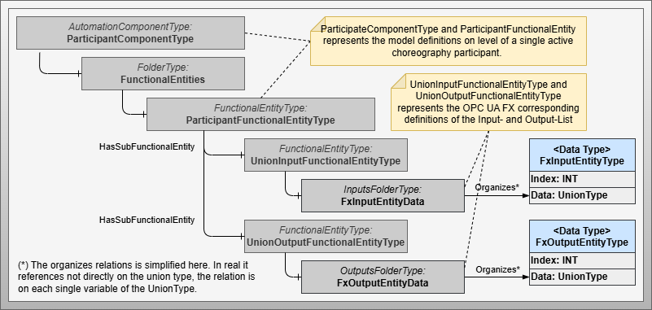
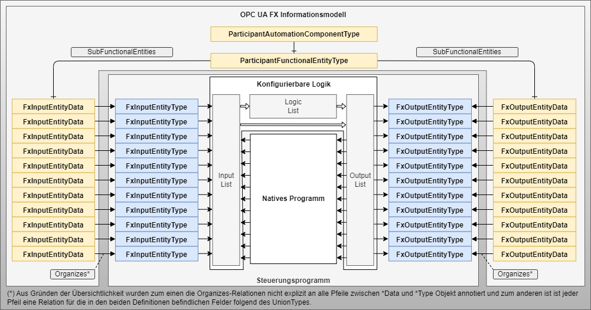

Configurable Communication OPC UA FX
Artifact - Configurable Communication with OPC UA FX
Artifact Factsheet
| Fact Sheet | |
|---|---|
| Name | Configurable Communication with OPC UA Field eXchange (FX) |
| Artifact Type | Design Pattern |
| Target Users | Software Architects, PLC Programmers |
| Objective | This design pattern defines, in accordance with the OPC UA FX specification, the necessary information models and corresponding mirror data types for integration into control programs. OPC UA FX already describes a standard mechanism for direct information exchange between controllers. The pattern defines necessary components and describes their application. |
Relevant Publications
Content partially published in [SBB+23] and based on OPC UA Specification 10000-8X [OPC10000-80].
Artifact Description
The design pattern Configurable Communication with OPC UA FX defines the necessary components for applying OPC UA FX in Controller-to-Controller (C2C) execution. The uniqueness of this design pattern lies in the fact that OPC UA FX C2C is already specified for the use case pursued with the concrete design patterns of configurable communication.
The OPC UA FX specification describes how connections between two endpoints are to be configured. The information must be described in a defined form, requiring data types for the control program and associated OPC UA models to be defined.
This design pattern enables Communication Pattern Variant 2, as currently only OPC UA Publish/Subscribe is specified for OPC UA FX. In the future, application for OPC UA Client/Server is also expected, which would also support variants 3 and 4.
Artifact Technological Conditions
Unlike OPC UA Publish/Subscribe and OPC UA Client/Server, OPC UA FX does not require explicit logic for communication in the user program. It is implemented as a firmware function in the controller. The FunctionalEntityTypes and the necessary AutomationComponentType for configuration are created via the information model provided by the OPC UA Server.
Corresponding preparations are required for linking between the control program and information model, which are described in this design pattern. The components themselves create the data types that correspond to the FunctionalEntityTypes and make them available. The standardization of these constructs is crucial for the vendor neutrality of automation service choreographies and enables integration into the Connection Manager.
Artifact Building Blocks
The design pattern comprises nine definitions that enable equipping an active choreography participant with communication functions according to the OPC UA FX standard.
 Figure: Components and data types of the OPC UA Field Exchange specific design pattern for configurable communication
 Figure: Pattern-specific information models for using OPC UA FX in automation service choreographies
OpcUaFxManager
The core component that links the proxy data types for FunctionalEntityTypes with the input elements of the configurable logic.
FxInputEntityType
Contains the associated information element for incoming OPC UA FX information on the control program side. The Index specifies which input element the associated FxInput element is transferred to.
FxOutputEntityType
Contains the associated information element for outgoing OPC UA FX information on the control program side. The Index specifies from which output element the value for the associated FxOutput element should be taken.
ParticipantComponentType
A subtype of AutomationComponentType that represents the root element of a choreography participant relevant in an OPC UA FX relation.
ParticipantFunctionalEntityType
A subtype of FunctionalEntityType that represents the top functional element of a choreography participant.
UnionInputFunctionalEntityType
A subtype of FunctionalEntityType that represents the functional element of an input element. It has a folder object with Organizes relations to variables of the FxInput data type originating from the control program.
UnionOutputFunctionalEntityType
A subtype of FunctionalEntityType that represents the functional element of an output element. It has a folder object with Organizes relations to variables of the FxOutput data type originating from the control program.
Artifact Decisions
Mirror Data Types for OPC UA FX Models
The linking of OPC UA information models and controller application programs is implemented through mapping. To make this mapping as simple as possible, mirror data types are specified for the application program that correspond to the information models defined in OPC UA FX. This makes future mapping easier for both developers and tool-supported mapping.
Artifact Implementation Details
The central aspect of the design pattern is the division of components in the control program and the definitions of the OPC UA FX information model. In the control program, the data types FxInputEntityType and FxOutputEntityType represent mirror definitions to the OPC UA FX definitions FxInputEntityData and FxOutputEntityData.
Communication execution occurs via the system functions of the OPC UA FX firmware. Each FxInputEntityType and FxOutputEntityType has index information that addresses the corresponding element of the input or output list.
Artifact Application
 Figure: Application of the OPC UA FX-specific design pattern for implementing incoming and outgoing information following the active choreography participant design pattern
The design pattern serves to connect incoming and outgoing information between active choreography participants based on OPC UA FX. When OPC UA FX functionality is integrated into the control system firmware, an active choreography participant can be equipped with OPC UA FX mechanisms using the extensions of basic models and mirror definitions described here.
Artifact Pros/Cons
Advantages:
- Enables extensive integration of C2C communication in industrial control systems
- Significantly reduces effort in the application program
- Standardized mechanism for direct controller-to-controller communication
Disadvantages:
- Novelty risks: No commercial applications currently exist, and the specification is relatively new
- Specification changes and limitations in productive use are likely
- Connection preparation is necessary for OPC UA FX connections
- Not suitable for integrating existing systems due to preparation requirements
- Actual benefits can only be definitively evaluated with available commercial implementations